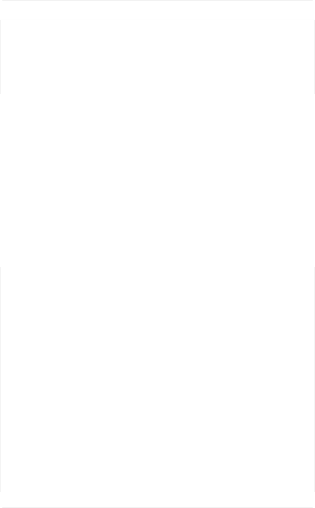

《Python Cookbook》第三版, Release 2.0.0
>>> c.area
50.26548245743669
>>> c.perimeter
Computing perimeter
25.132741228718345
>>> c.perimeter
25.132741228718345
>>>
仔细观察你会发现消息 Computing area 和Computing perimeter 仅仅出现一次。
10.10.3 讨论
很多时候，构造一个延迟计算属性的主要目的是为了提升性能。例如，你可以避免
计算这些属性值，除非你真的需要它们。这里演示的方案就是用来实现这样的效果的，
只不过它是通过以非常高效的方式使用描述器的一个精妙特性来达到这种效果的。
正如在其他小节 (如8.9 小节)所讲的那样，当一个描述器被放入一个类的定义时，
每次访问属性时它的 get () 、set () 和delete () 方法就会被触发。不过，
如果一个描述器仅仅只定义了一个 get () 方法的话，它比通常的具有更弱的绑定。
特别地，只有当被访问属性不在实例底层的字典中时 get () 方法才会被触发。
lazyproperty 类利用这一点，使用 get () 方法在实例中存储计算出来的值，这
个实例使用相同的名字作为它的 property。这样一来，结果值被存储在实例字典中并
且以后就不需要再去计算这个 property 了。你可以尝试更深入的例子来观察结果：
>>> c=Circle(4.0)
>>> # Get instance variables
>>> vars(c)
{'radius': 4.0}
>>> # Compute area and observe variables afterward
>>> c.area
Computing area
50.26548245743669
>>> vars(c)
{'area': 50.26548245743669, 'radius': 4.0}
>>> # Notice access doesn't invoke property anymore
>>> c.area
50.26548245743669
>>> # Delete the variable and see property trigger again
>>> del c.area
>>> vars(c)
{'radius': 4.0}
>>> c.area
Computing area
50.26548245743669
>>>
10.10. 8.10 使用延迟计算属性 255